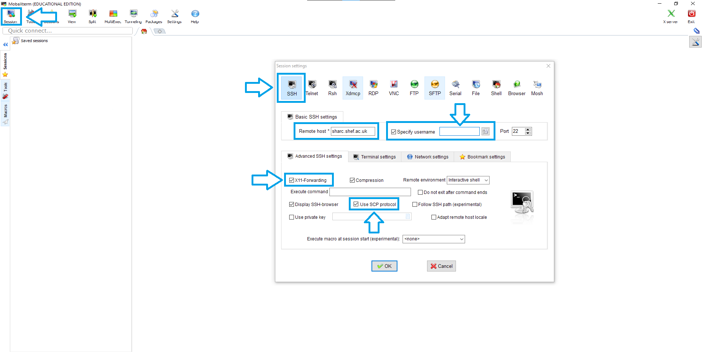
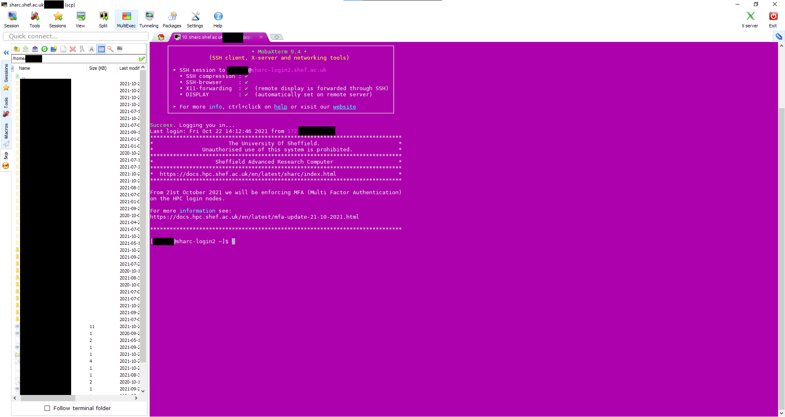

Setting up Profiles in MobaXterm
For personal systems you can download and install the Installer edition of MobaXterm.
After starting MobaXterm you should see something like this:
{kind=link}
Tip
Usernames to connect with all HPC services will be the same as those you use to login to MUSE not the prefix on your email address.
You should create a session profile for your login for each cluster by clicking Session in the top left, and then SSH.
Enter the details for the cluster in the Remote host box, choosing
stanage.shef.ac.ukorbessemer.shef.ac.uk.Now click the Specify Username checkmark and enter your username.
Please ensure that the checkmark for X11 Forwarding is ticked or GUI applications will be unable to open.
Please ensure that that Use SCP protocol is also ticked (or depending on MobaXterm version select SCP (enhanced speed) option from the SSH-browser type dropdown menu) .
Now click OK to save your session profile.
You should add a session for each cluster.
Caution
Alternatively you can use a terminal within MobaXterm for SSHing to remote machines but be warned that this may cause authentication issues when trying to connect to Stanage using MFA.
You can now double click on this session profile to start connecting at which point you will be prompted for your username, password and then with a Duo MFA prompt (or a request for your TOTP verification code on Stanage). Please enter these details and your terminal will connect as shown below.
You may be asked to submit your username and password with a second MFA prompt in order for the file browser to work correctly. On a successful login you should be presented with a screen like the below:
{kind=link}